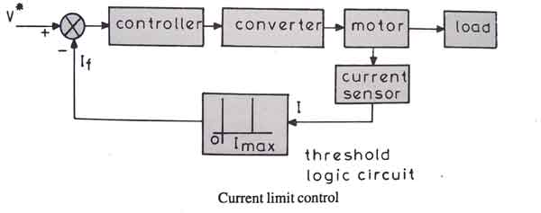
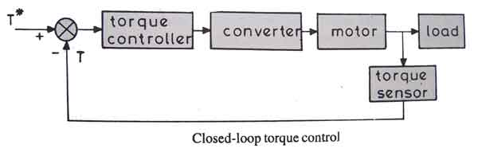
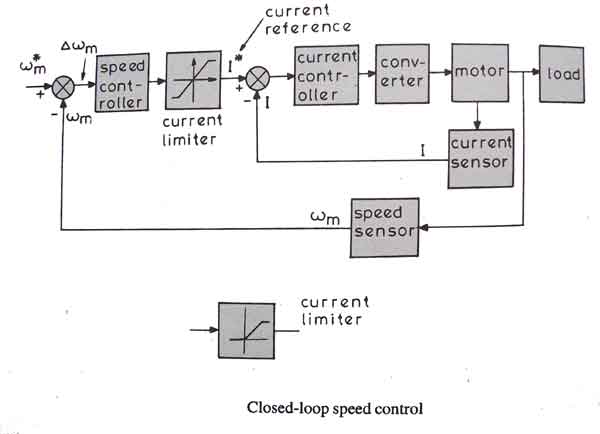

Current Limit Control
Closed Loop Torque Control
Closed Loop Speed Control
Electrical drives have become the most essential equipment now a days in the electrical motors and other rotating machines. We know that electrical drives mainly accomplishes three kinds of work, i)Starting ii) Speed control and iii) Braking. It can be said that the electrical drives enable us to control the motor in every aspect. But control of electrical drives is also necessary because all the functions accomplished by the drives are mainly transient operations i.e the change in terminal voltage, current, etc are huge which may damage the motor temporarily or permanently. That’s why the need of controlling the drives rises and there are various methods and equipment's to control different parameters of the drives which are discussed later.
Closed Loop Control of Drives
In control system there are two types of systems, one is open loop an the other is closed loop control system. In open loop control system the output has no effect on the input, i.e the controlling phenomenon is independent of the output, on the other hand closed loop control system is much more advanced and scientific, here the out put is fed back to the input terminal which determines the amount of input to the system, for example if the output is more than predetermined value the input is reduced and vice-versa. In electrical drives feed back loops or closed loop control satisfy the following requirements.
i) Protection
ii) Enhancement of speed of response
iii) To improve steady –state accuracy
In the following discussions, we will see through different closed loop configurations which are used in electrical drives irrespective of the type of supply they are fed, i.e dc or ac.
Current Limit Control
During the starting, we know if precautionary measures are not taken there is a chance of huge electric current flow through the motor circuit. To limit the electric current and sense the electric current fed to the motor, electric current limit controller is installed. The feedback loop does not effect the normal operation of the drive but if the electric current exceeds the predetermined safe limit, the feedback loop activates and the electric current is brought down below the safe limit. Once the electric current is brought down below the safe limit the feedback loop again deactivates and in this way the control of electric current takes place.

Closed Loop Torque Control
This type of torque controller is seen mainly in battery operated vehicles like cars, trains etc. the accelerator present in the vehicles is pressed by the driver to set the reference torque T. The actual torque T follows the T* which is controlled by the driver via accelerator.

Closed Loop Speed Control
Speed control loops are perhaps the most widely used feedback loops for drives. If we first see the block diagram of this loop then it will be a lot easier for us to understand.

We can see from the diagram that there are two control loops, which can be said as an inner loop and outer loop. The inner electric current control loop limits the converter and motor electric current or motor torque below the safe limit. Now we can understand the function of the control loop and drive by practical examples. Suppose the reference speed Wm* increases and there is a positive error ΔWm, which indicates that the speed is needed to be increased. Now the inner loop increases the electric current keeping it under maximum allowable current. And then the driver accelerates, when the speed reaches the desired speed then the motor torque is equal to the load torque and there is a decrease in the reference speed Wm which indicates that there is no need of any more acceleration but there must be deceleration, and braking is done by the speed controller at maximum allowable current. So, we can say that during speed controlling the function transfers from motoring to braking and from braking to motoring continuously for the smooth operation and running of the motor.
 by
by {kind=link}
{kind=link}
{kind=link}